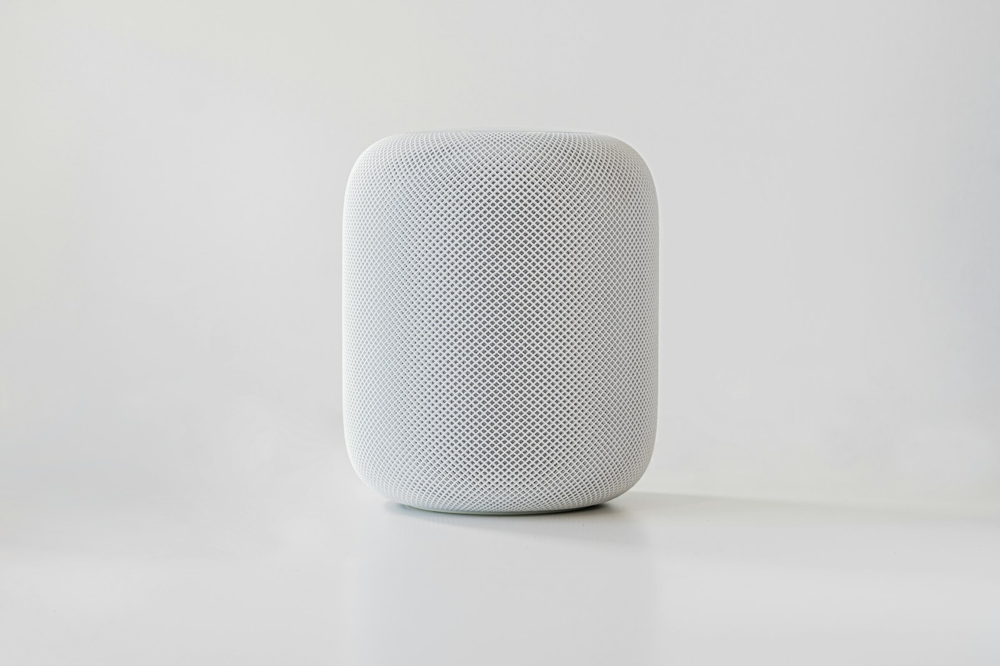

Retail Music Strategy
Research, insights, and the science of sound in commercial spaces.
How to Get Out of a Mood Media Contract
April 2026 · 7 min read
A practical walkthrough for operators with an auto-renewing contract. What to look for in the paperwork, when to give notice, and how to exit without breach.

What to Ask Your Music Vendor at the Next QBR
April 2026 · 6 min read
Ten questions a VP of Retail Ops should put to the music vendor at the next quarterly review. Half of them will not have answers. That is the information you need.

Tuesday vs. Saturday Traffic: What Your Data Actually Says
April 2026 · 6 min read
The two days look like different stores. They often are. What the Tuesday-Saturday gap reveals about your customer mix and what to do about it.

Mall vs. Street: Making the Same Brand Feel Right in Both
April 2026 · 6 min read
The same merchandise, the same signage, and a completely different customer. What multi-location operators get wrong about keeping brand coherence across formats.

Is It Actually Illegal to Use Spotify in My Store?
April 2026 · 8 min read
A clean answer for retail operators who just want to know if the Spotify account their store manager set up is going to bite them.

How Much Does In-Store Music Actually Cost?
April 2026 · 9 min read
The subscription fee is the number people know. The total bill is bigger, and it sits on nobody's desk.

Music for Boutiques: What Should Your Store Actually Sound Like?
April 2026 · 10 min read
Most boutique owners pick music the way they pick lunch. The research says that's costing them customers.

Best Background Music for Retail Stores (2026)
April 2026 · 12 min read
Every store plays music. Almost none of them know whether it is helping or hurting. Here is what to look for, what to avoid, and what the legally safe options actually are.

How to Choose Music for Your Retail Store
April 2026 · 11 min read

Alternatives to Mood Media in 2026: Commercial Music Services Compared
April 2026 · 12 min read
A retail operator's comparison of Mood Media, Soundtrack Your Brand, Cloud Cover, SiriusXM, and the newer AI-original category. Pricing, contracts, and what each one can and cannot tell you about your stores.

What Music to Play in a High-End Store
April 2026 · 9 min read
Classical music increased average wine purchase price 2.5x in the Areni and Kim study. What your store sounds like is shaping what your customers are willing to spend.

Retail Music Licensing in 2026: What Every Store Owner Needs to Know
April 2026 · 8 min read
ASCAP, BMI, SESAC. What licenses your stores need, what they cost, and the question most operators never ask their music vendor.

How to Measure If Your Store Music Is Working
April 2026 · 9 min read
A short operator audit for telling whether the music in your stores is pulling its weight or costing you sales.

How to Make Your Store Sound Premium
April 2026 · 8 min read
Luxury brands don't play better playlists. They treat audio like they treat lighting, fixtures, and scent: as a design decision with measurable consequences.
Music for Home Goods Stores
April 2026 · 8 min read
Your home goods customers are doing something different from apparel shoppers. Most stores ignore that completely.

Multi-Location Music: Why Every Store Sounds Different
April 2026 · 8 min read
Ten locations, ten managers, ten soundtracks.

Audio Advertising vs. Audio Strategy
April 2026 · 8 min read
QSIC sells ads through your speakers. Audio strategy uses music to sell your products. Know the difference.

The Audio Gap in Retail Customer Experience
April 2026 · 8 min read
You signed off on six figures of lighting. You signed off on a $35 a month music subscription. The customer hears both.

Sensory Marketing for Retail: Where Sound Fits in the Strategy
April 2026 · 9 min read
Scent and lighting get dedicated budgets. Sound gets a playlist.

AI Music for Business in 2026: What Works
April 2026 · 9 min read
AI music generation crossed the commercial quality threshold in late 2025. Three things changed for retailers who pay attention to what plays in their stores.

Retail Designed Everything Except the Most Powerful Thing
April 2026 · 2 min read
Every surface, fixture, and light in a well-run store is a deliberate choice. Then the music comes on.

The Difference Between Art and Design
April 2026 · 3 min read
Art is craft for self-expression. Design is craft for an intended outcome. Retail music is a design problem nobody had solved.
Why I Went Back to Folding Shirts
April 2026 · 3 min read
A hiring sign at Park Meadows Mall led to a retail floor job, a wrong playlist, and a question that became Entuned.

What a Producer Hears That You Don't
April 2026 · 3 min read
Your store manager has heard the playlist so many times they've stopped noticing what's wrong. The customer walks in fresh.

Welcoming Mrinmayi Katti to Entuned
April 2026 · 3 min read
Mrinmayi joins Entuned to lead data science work. The right person reached out at the right time.

Song Selection Is Not Music Strategy
April 2026 · 4 min read
Every song carries its cultural baggage into your store. Music strategy starts with the outcome, not the playlist.

Every Song Is Either Working Or It Isn't
April 2026 · 5 min read
Your store plays hundreds of tracks a week. Some of them are helping. Some of them are costing you money. The difference matters more than most operators think.

Featured
Nobody Read the Lyrics
March 2026 · 8 min read
Every song on your in-store playlist was written for a different reason than why it is playing. Sometimes that reason is one you would never put on a wall.

The Store-Level KPI You're Not Tracking Yet
April 2026 · 4 min read
Most operators track sales, traffic, and conversion. The stores that pull ahead of their peers track one more thing, and it's usually something everyone else treats as fixed.

The Second Sale You Already Made
April 2026 · 4 min read
Extending dwell time doesn't just increase spending. It makes the storefront look busier, which draws more foot traffic. It compounds.

The Familiarity Trap
April 2026 · 3 min read
Your customers recognize the playlist. And they leave sooner because of it.

The Store Is Not a Set
April 2026 · 5 min read
Retail experience design borrows from theater. The store could be closer to a jazz ensemble than to a stage play.

Your Music Is Selling Against You
April 2026 · 7 min read
Incongruent music does not just fail to help. It actively reduces willingness to pay.

Sound Check: The Playlist Problem
April 2026 · 7 min read
Personal streaming accounts are illegal in commercial spaces. Employee-picked music serves the staff, not the customer. And the songs everyone recognizes are probably costing you floor time.

Sound Check: The Science You're Already Ignoring
April 2026 · 9 min read
Forty years of field research says your store music changes what customers buy. Most operators have never seen the data.

Music Is a Variable. Start Treating It Like One.
April 2026 · 7 min read
Your lighting has a spec. Your scent has a spec. Your music is whatever the opening manager felt like playing.

Sound Check: How Do You Know If Your Music Is Hurting Sales?
April 2026 · 8 min read
Most retailers track everything about their stores except the one variable playing on repeat for every open hour.

The CFO's Case for Retail Audio
March 2026 · 7 min read
How a finance team should think about a line item for in-store music, what the public research actually supports, and how to test it before committing.

How to Get More Out of the Sensor Data You Already Pay For
March 2026 · 7 min read
Most multi-location retailers pay for traffic counters, zone tracking, and conversion data. Very few use that data to change what actually happens inside the store.

Your Music Provider Doesn't Know What Your Analytics Platform Knows
March 2026 · 7 min read
Your analytics vendor and your music vendor share the same store and have never exchanged a single data point. That gap is where unexplained variance lives.

The Battery Ventures Thesis, Extended
March 2026 · 7 min read
Battery Ventures backed RetailNext to build the physical retail data layer. The next logical surface for that thesis is the one nobody has connected yet.

$2 Billion in Sensors. No Real-Time Levers.
March 2026 · 7 min read
The in-store analytics market is approaching 2 billion dollars. It still cannot tell a retailer what to change in real time.

What Is Entuned?
March 2026 · 5 min read
Original music for retail stores. Measured like every other line item.

Does Your Store's Music Actually Matter?
March 2026 · 5 min read
Most operators assume music is background noise. Four decades of peer-reviewed studies confirm it's a variable that nobody is tracking.

AI vs. Traditional In-Store Music
March 2026 · 6 min read
The in-store music industry has run on the same model since 1934. Generative music changes the options retailers actually have.

Mood Media Alternatives in 2026
March 2026 · 9 min read
A straight look at what the market offers operators who are done with long contracts and flat playlists.

How to Measure the ROI of In-Store Music
March 2026 · 5 min read
Your music is a line item with no return number next to it. Here is why, and what to do about it at your next QBR.

What Your Store Sounds Like in the First 10 Seconds (And Why It Matters)
March 2026 · 7 min read
Customers decide whether to stay or leave before they reach the first rack. Most of that decision has nothing to do with merchandise.

Tempo Controls Bodies, Not Wallets
March 2026 · 4 min read
Slower tempo gets customers to stay longer. That alone does not make them spend more. Here's what operators need to know.

The Milliman Study Is Wrong. Sort Of.
March 2026 · 5 min read
The most cited finding in retail music is 42 years old, from one grocery store. The dwell time effect holds up. The sales number does not.

Major Key Does Not Mean Happy Customer.
March 2026 · 4 min read
The assumption behind most retail playlists is that cheerful music drives sales. Stores that test this find a more complicated answer.

Longer Visits Don't Mean Bigger Receipts
March 2026 · 5 min read
Your dwell time numbers look great. Your average ticket hasn't moved. That gap costs more than most operators realize.

Tempo and Volume Are Free. The Revenue Isn't.
March 2026 · 5 min read
Every retailer already has a volume knob. The part that moves revenue costs money, and most stores never get there.

You Hired a Lighting Designer. Why Not a Sound Designer?
March 2026 · 4 min read
Lighting and sound operate on the same nervous-system mechanisms. The industry treats one as design and the other as a subscription.

What Happens After Ninety Days
March 2026 · 5 min read
The first week is setup. The first month is noise. By day ninety, the numbers start telling you how music works in your store specifically.

The Store Manager Problem
March 2026 · 5 min read
Ten locations means ten managers making independent sonic decisions. The brand sounds like ten different stores.

Why the Next Big Retail Tech Acquisition Will Be in Audio
March 2026 · 5 min read
Retail tech acquisitions follow a pattern. Audio is the surface that has been left out of the stack, and the window to fix that is open now.

How Do I Get My Staff to Stop Turning Off the Music?
March 2026 · 5 min read
Your associates are telling you something when they mute the speakers. Here is what they are saying and what it costs you in the aisle.

No Gaps. No Silence. No Jolt.
March 2026 · 4 min read
Every rough transition between tracks pulls your customer out of the browsing state that drives purchases.

Running Controlled Tests Across Multiple Stores
March 2026 · 6 min read
Most multi-location retailers test new ideas by rolling them out everywhere and hoping. There's a better way.

Your Store Already Has a Mood
March 2026 · 8 min read
Something is playing in every one of your locations right now. Whether anyone chose it with intent is a different question.

The Real Cost of Your Retail Music
March 2026 · 4 min read
The invoice line for store music is the smallest number in this conversation. The interesting number is what bad audio costs you in revenue you never see on any report.

Music Was Never Made For Your Store
March 2026 · 5 min read
The songs playing in your stores right now were written for something else. Here is how you tell whether that is costing you.

Why Your Store's Background Music Is Costing You Sales
March 2026 · 7 min read
Generic playlists built for retail in general create cognitive friction that shortens visits and suppresses transaction values.

The Science of Tempo in Retail
March 2026 · 5 min read
Tempo is the most studied variable in retail music research. It is also the most misunderstood.

What Kind of Music Should a Store Like Mine Play?
March 2026 · 6 min read
The question every multi-location operator eventually asks. The answer has less to do with genre than most people think.

AI-Generated Music for Retail: What's Real
March 2026 · 5 min read
Generative music crossed the commercial quality threshold in late 2025. Here is what changed for retail and what the hype is still ahead of.

The 8-12% You're Leaving on the Table
March 2026 · 3 min read
Music congruence increases willingness to pay by 8 to 12 percent. No extra traffic required. No promotions. Just the right music.

Why Your Best Customers Leave Faster Than They Should
March 2026 · 3 min read
Your highest-value shoppers spend less time in your store than your browsers do. Most operators never ask why.

What Churches, Concert Halls, and Film Composers Know That Retail Doesn't
March 2026 · 3 min read
Every serious application of music engineers it for a specific outcome. Retail is the one high-stakes context that never tried.

The Dwell Time Variable Nobody's Tracking
March 2026 · 3 min read
Your audio environment is invisible to your analytics because it never changes. Start treating it as a variable.

What Your Music Is Saying About Your Brand
March 2026 · 3 min read
One incongruent track at the moment of peak purchase intention can undo everything your brand team built.

Luxury Priming Is Real
March 2026 · 3 min read
Customers in a wine store spent more on expensive bottles when the background music changed. The products were identical. The prices were identical. Only the audio was different.

What Happens to Employee Performance When the Music Is Right
March 2026 · 3 min read
Your staff spend eight hours a day inside the audio environment your customers pass through in thirty minutes. When that environment is wrong, your team notices before anyone else.

How Wine Retailers Use Music to Sell Premium Bottles
March 2026 · 3 min read
A 1993 study found that classical music in a wine shop moved customers toward more expensive bottles. Same wine, same prices, different receipts.

The Metrics Your Audio Environment Should Be Producing
March 2026 · 3 min read
If your audio environment is doing its job, you should be able to see it in four metrics. Most stores have never looked.